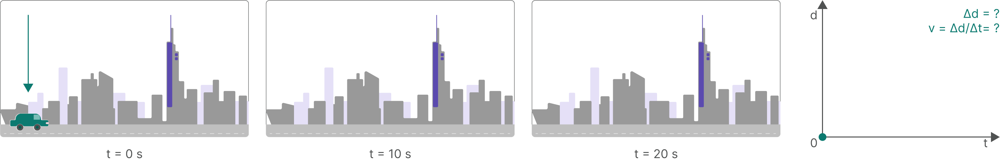
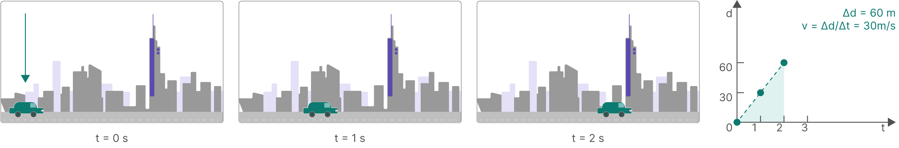

Module 3-3
Tracking Shear Waves with Ultrafast Ultrasound
Once a shear wave has been launched, its propagation must be tracked in space and time to determine its velocity. This requires imaging frame rates far beyond those achievable in conventional echocardiography.


Figure 1. Tracking a car's position across video frames at a low frame rate versus a high frame rate. Sparse frames (top) leave too few points to estimate velocity reliably, while densely sampled frames (bottom) trace out a clear trajectory and a well-defined velocity. The same principle governs how frame rate limits the ability to estimate shear wave velocity.
Estimating wave velocity requires observing the wave front at multiple positions across time. The more time points captured, the more reliable the estimate. The same principle applies to any moving object: a camera shooting at 10 frames per second (fps) cannot resolve the trajectory of a fast-moving subject, whereas a high-velocity camera shooting at thousands of frames per second can. Shear waves in myocardial tissue travel at roughly 1 to 10 m/s and traverse a region of interest in tens of milliseconds, so the imaging system must acquire frames rapidly enough to capture the wave front at several positions within that window.
Animation is slowed down for visibility, but the timing ratios are physically accurate: each panel's frame-acquisition time is computed from the sliders above (round-trip time × scan lines for conventional; 1 / frame rate for ultrafast) and compared against how long the wave actually takes to cross the region of interest.
Capped by round-trip time to depth (2d/c), not multiplied by scan line count — this is why ultrafast frame rate can be tuned directly within this range, unlike conventional imaging's depth slider.
Conventional frame rates are insufficient for shear wave tracking
In conventional focused ultrasound, images are formed line by line: each scan line requires a dedicated transmit-receive cycle, and the minimum duration of each cycle is determined by the round-trip travel time of sound to the imaging depth and back. At a depth of 10 cm in tissue, this round-trip travel takes approximately 130 µs. With a typical 2D image requiring 100 or more scan lines, the resulting frame rate falls between 30 and 100 fps. A myocardial shear wave traveling at 2 m/s crosses a region of interest in tens of milliseconds; at conventional frame rates, the wave would be captured in too few frames to estimate its velocity reliably.
Plane wave transmission enables ultrafast acquisition
Ultrafast ultrasound replaces focused line-by-line transmission with a single unfocused plane wave that illuminates the entire field of view in one transmit event. Because one transmission covers the full image rather than a single scan line, frame rates exceeding 1,000 fps are achievable, with rates up to approximately 10,000 fps demonstrated in research settings. This temporal resolution is sufficient to track shear wave propagation frame by frame as it traverses the myocardium.
Trade-off
The trade-off is image quality: a single plane wave has lower lateral resolution and signal-to-noise ratio than a focused beam. Coherent compounding, combining images from multiple angled plane wave transmissions, recovers much of this quality while maintaining frame rates well above those of conventional imaging. For shear wave tracking, single-angle plane wave sequences are often used in practice to maximize temporal resolution, with image quality accepted as a secondary constraint.
Displacement is tracked by ultrafast ultrasound
What is tracked during acquisition is the tissue displacement field — the micrometric axial motion of tissue produced by the passing shear wave. This displacement is extracted from successive frames by cross-correlation of the raw radiofrequency (RF) signal, and it is the spatial and temporal pattern of these displacements that is used to estimate shear wave velocity.
From shear wave velocity to myocardial stiffness
As the shear wave propagates laterally, its position at each time point is identified from the displacement field. Velocity is then derived from the distance traveled per unit time.
Shear wave velocity (c) is related to shear modulus (μ) by:
μ = ρc²
where ρ is tissue density, assumed to be approximately 1,000 kg/m³ for soft tissue. Under the near-incompressibility assumption established in Module 3-1, Young's modulus (E) can be approximated as:
E ≈ 3μ
Some clinical systems report myocardial stiffness as Young's modulus rather than shear modulus using this approximation. Both quantities are reported in kilopascals (kPa).
position vs. time — slope of the fit line = wave speed
μ = ρ × c2 = 1000 × 2.02 = 4.0 kPa
E ≈ 3 × μ = 3 × 4.0 = 12.0 kPa
Summary
Conventional echocardiography achieves 30–100 fps, which is insufficient to resolve shear wave propagation. Ultrafast ultrasound uses plane wave transmissions to achieve frame rates above 1,000 fps, enabling frame-by-frame tracking of shear wave displacement. Shear wave velocity is derived from the wave front position over time; shear modulus follows from μ = ρc². Under the near-incompressibility assumption, E ≈ 3μ.